1. Global Stratejik Planlayıcı (A*)
Görevin genel verimliliğini yönetir. Bilinen statik engelleri analiz ederek enerji tüketimini minimize eden en optimal rotaları hesaplar.
TÜBİTAK 1812 BİGG Yatırımcı Sunumu
Donanımdan Bağımsız Bilişsel Su Altı Sürü Ekosistemi
"Sessiz Derinliklerde Kesintisiz İletişim, Asimetrik Otonomi."
Saha Verileri ile Doğrulanmış Uygulamalı Ar-Ge Sunumu
Geliştirdiğimiz otonomi algoritmaları, 6-DoF (6 Serbestlik Dereceli) manevra kabiliyetine sahip BlueROV2 mimarisi üzerinde test edilmiştir. Bu sayede araçlar akıntı altında bile kusursuz stabilizasyon sağlar.
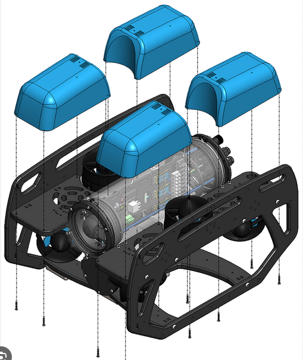
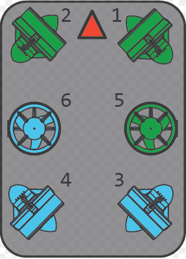
Dışa bağımlı ve astronomik maliyetli konumlandırma sistemleri yerine geliştirdiğimiz özgün AMKS (Artırılabilir Menzilli Konumlandırma Sistemi) algoritması. Aşağıda, X, Y ve Z mesafeleri bilindiğinde ROV'un (nokta) Matplotlib ortamındaki teorik 3B hesaplama modelleri görülmektedir.
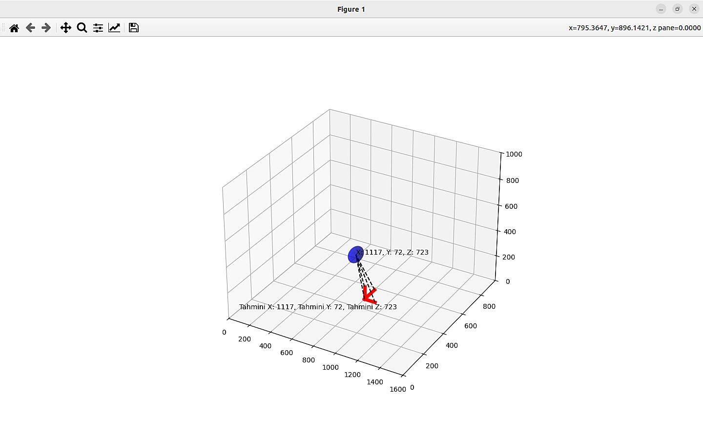
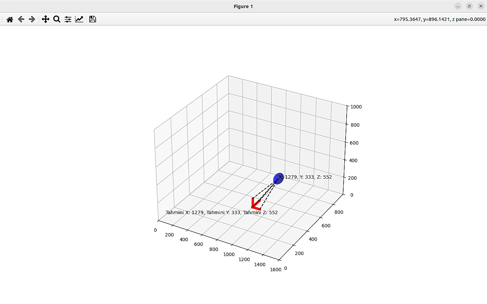
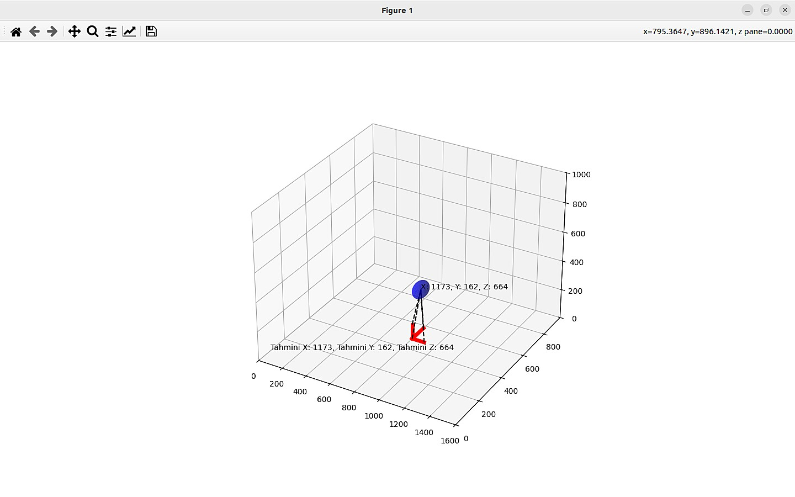
Derinlik ve Akustik Dalga Yansıması Kesitlemeleri
Su altında elektromanyetik dalgaların sönümlenmesi nedeniyle iletişim kısıtlıdır. Sürü zekasının çekirdeği olan haberleşme için özel sinyal modülasyonları tasarlanmıştır:
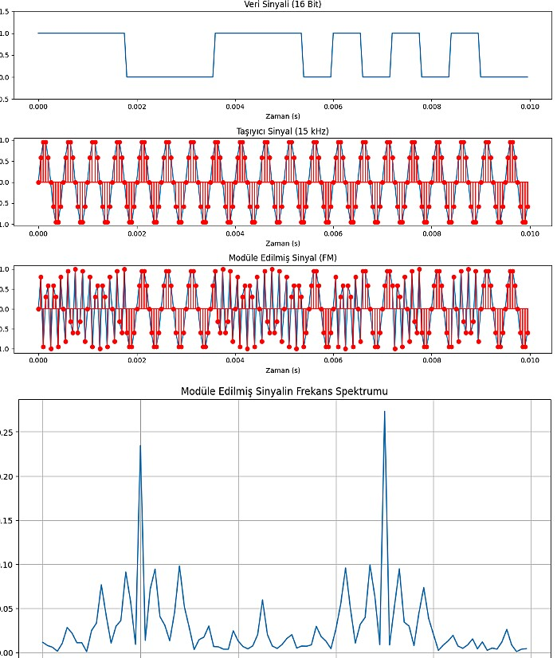
LLM tabanlı karar mekanizmalarını entegre eden, araçların "kara kutu" olmadan tamamen otonom çalıştığı hiyerarşik yapı:
Görevin genel verimliliğini yönetir. Bilinen statik engelleri analiz ederek enerji tüketimini minimize eden en optimal rotaları hesaplar.
Sensörlerle haritada olmayan engeller tespit edildiğinde devreye girer. Ana rotayı terk etmeden güvenli bir sapma (detour) oluşturur.
Derin Pekiştirmeli Öğrenme ile dinamik tehditlere 0.2 saniye gibi sürede tepki vererek çarpışmaları önleyen kayıp toleranslı sistemdir.
BlueROV2 sürü formasyon, hedef takibi ve lider seçim algoritmaları için gerçekleştirilen saha/simülasyon testlerinden öne çıkan görseller ve video:
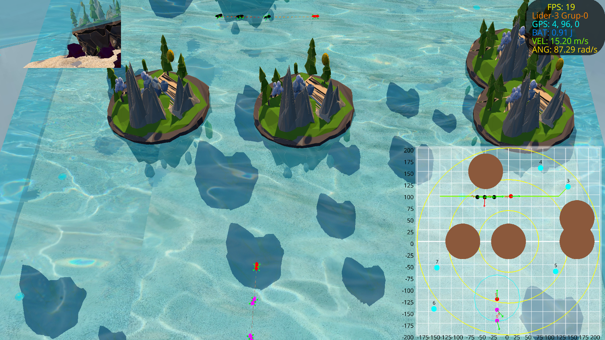
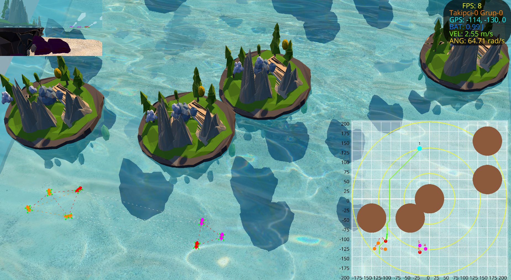
TÜBİTAK 2209-A kapsamında geliştirilen prototip üzerinden sağlanan başarılı haberleşme testi.
İletişim protokollerinin optimize edilerek hızlandırılmış donanımsal doğrulama süreci.
Kısıtlı iletişim ortamında çoklu ROV'ların (swarm) birbirlerine çarpmadan otonom filo yönetimi.
AMKS konumlandırma protokolünün Python/Ursina ortamında görselleştirilen ilkel simülasyonu.
| Ürün / Hizmet Segmenti | Operasyonel Görev Tanımı | Yıllık Hacim Öngörüsü | Araç/Lisans Hedef Bedeli |
|---|---|---|---|
| Tip 1: Askeri & Stratejik | Donanmalar için silahlı/silahsız otonom keşif ve koruma sürüleri. Hedef tespit ve imhası. | 2 Sürü (6 ROV) | ~9.500.000 TL |
| Tip 2: Sivil & Ticari Satış | Baraj hasar tespiti, batık keşfi ve su ürünleri ağ kontrolü için hafif donanımlı ROV'lar. | 4 Sürü (12 ROV) | ~2.000.000 TL |
| Tip 3: SaaS (Yazılım Lisans) | Diğer üreticilere donanım-bağımsız ROVNet işletim sistemi ve haberleşme (SAM) lisansı. | ~10 Araç Lisansı | ~100.000 TL / Ay |
| Tip 3: RaaS & Teknik Servis | KOBİ'ler için donanım kiralama, operasyon sonrası veri sağlama ve yedek parça/bakım. | 5 Araç Kira + Servis | ~150.000 TL / Ay |
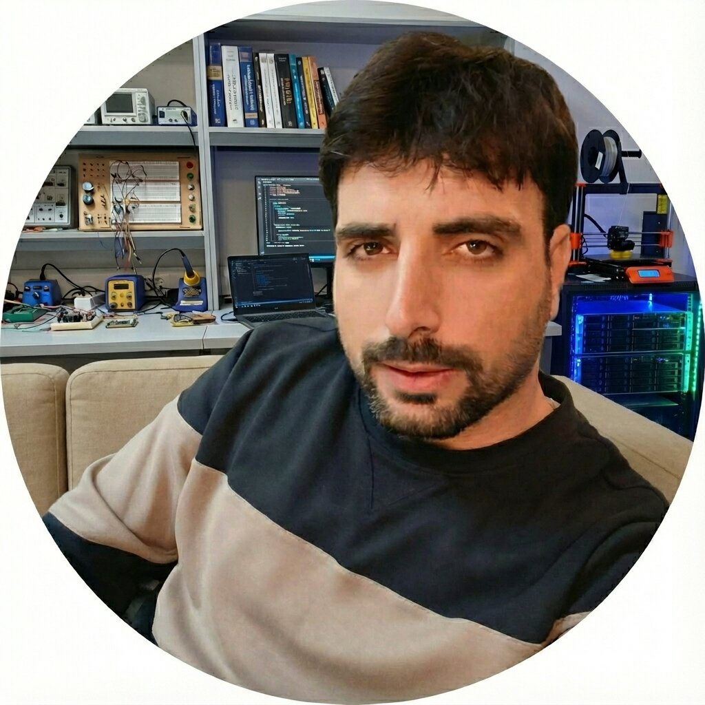
Kurucu / Otonomi Mimarı
Hacettepe Üniv. (Fizik Müh.) temelli, Fırat Üniv. Bilgisayar Müh. son sınıf öğrencisi.
TÜBİTAK 2209-A AMKS ve SAM iletişim protokolü donanım geliştiricisi.
Donanımdan bağımsız "İlk Prensipler" otonomi mimarisinin kurucusu.
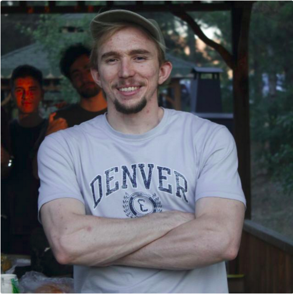
Kurucu Ortak / YZ Sorumlusu
Yazılım mimarisi, yapay zeka ve endüstriyel otomasyon alanında uzman.
Kriptarium Ar-Ge bünyesinde hareket/uzuv algılama takip sistemleri geliştiricisi.
HGM Yazılım kurucusu; yapay zeka destekli görüntü işleme yazılımları entegratörü.
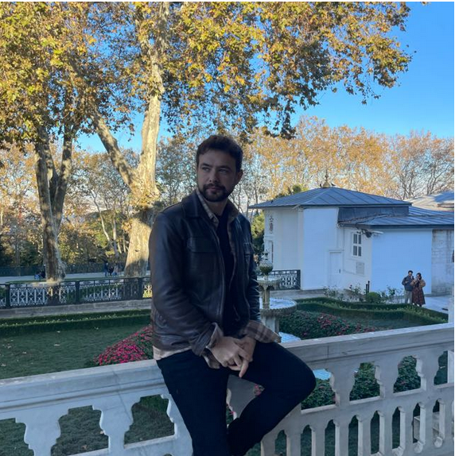
İş Geliştirme & Operasyon
Endüstri Mühendisi; üretim optimizasyonu, proses takibi ve ticarileştirme uzmanı.
Karakaya86'da Ford/Mercedes yatırım onaylı (24M TL) YZ hata kontrol projesi yöneticisi.
Patent, pazar analizi, lojistik süreç iyileştirme ve seri üretim operasyon sorumlusu.
Ar-Ge ekibimizin donanım entegrasyonu, sızdırmazlık, itki sistemleri ve zorlu şartlarda su altı araç dinamiği konusundaki pratik saha tecrübesi, TEKNOFEST İnsansız Su Altı Sistemleri yarışmalarındaki geçmiş otonom test başarılarına dayanmaktadır.
Projeye dair akademik kodlarımıza, geçmiş deneyimlerimize ve "İlk Prensipler" yaklaşımıyla kurduğumuz sürü zekası simülasyon repolarına GitHub üzerinden ulaşabilirsiniz.
ROVNet © 2026 | TÜBİTAK BİGG 1812